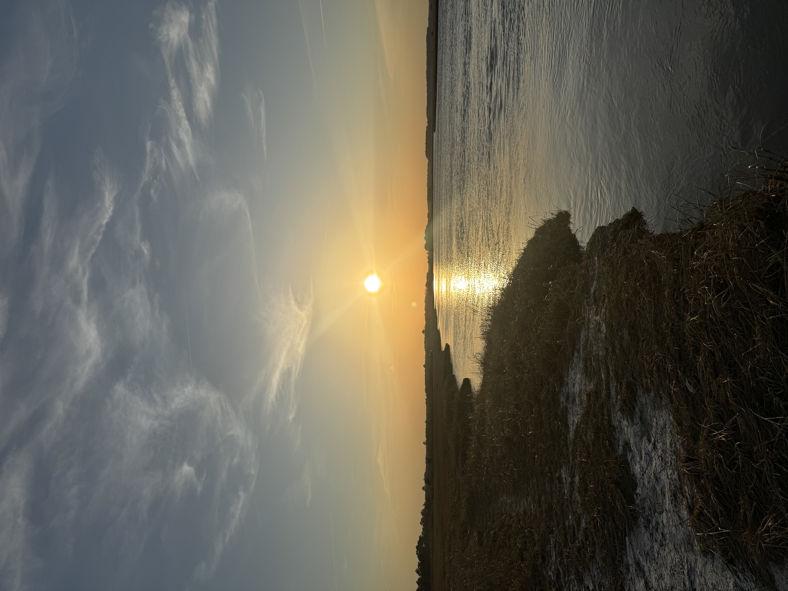

Most people driving to the Delaware beaches pass through salt marsh without registering it as anything other than scenery — flat, green-gold, unremarkable, the part of the drive between the highway and the water. According to DNREC, Delaware has more than 113,000 acres of tidal estuarine wetland and another 10,000-plus acres of tidal freshwater wetland, together accounting for nearly half of all the wetland acreage in the state. It is one of the largest things Delaware has, and one of the least looked at.
What it is actually doing while you drive past
Salt marsh does several jobs at once, none of them visible from a car window. It is a nursery: state wildlife biologists estimate that around 90 percent of the fish and shellfish species that matter commercially and recreationally along the coast spend part of their life cycle sheltering and feeding in tidal wetlands, which means most of what shows up on a dock or a dinner plate in Delaware passed through marsh grass as a juvenile. It is a filter, straining nutrients and contaminants out of water before it reaches the bay. It is increasingly recognized as a carbon sink, burying carbon in its soils over centuries rather than releasing it. And it is a storm buffer, absorbing wave energy and flooding before it reaches roads and houses. A Delaware state wetlands program summed up the position bluntly: salt marshes work hard, and they do it without being paid.
The marsh is already losing ground
None of that work is guaranteed to keep happening in the same place. Sea levels in Delaware Bay are rising, and refuge managers at Bombay Hook National Wildlife Refuge estimate that roughly 2,000 acres of salt marsh there have already been lost to sea level rise and erosion since the 1970s — a documented, already-happened loss, not a future projection. Research modeling more severe future scenarios has found that a sea level rise of around 1.5 meters by the end of this century could affect the great majority of both Bombay Hook and Prime Hook refuges. Some researchers, cited in a Yale Environment 360 feature on the estuary, have projected that Delaware Bay could lose as much as 90 percent of its wetlands by 2100 under an accelerated sea level rise scenario. That figure is a modeled projection tied to a specific scenario and a specific research group, not a settled fact, and it is presented here on that basis.
Delaware's answer: let it move
The state's response has not been to try to hold the shoreline in place. At Prime Hook National Wildlife Refuge, a roughly $38 million restoration project — among the largest of its kind on the East Coast — rebuilt marsh habitat on the expectation that the coastline, beach, and marsh will all continue shifting inland as seas rise, and that adaptation will work better than resistance. DNREC runs a parallel effort, its marsh migration program, aimed at identifying and protecting the low-lying land immediately behind existing marshes so that as the marsh drowns in place, it has somewhere landward to re-establish itself rather than simply disappearing. The goal is not to freeze the marsh where it currently sits. It is to keep a marsh functioning somewhere on that stretch of coast, even as the exact footprint keeps changing — nutrient cycling, carbon storage, and nursery habitat preserved by letting the location move rather than trying to make it stay.
Where to actually see this
Salt marsh is not confined to one refuge. It runs along the Walking Dunes Trail at Cape Henlopen State Park, it borders Mispillion Harbor where horseshoe crabs and red knots meet every spring, and it lines the back bays behind most of the Delaware beach towns. It rewards a slower look than most people give it from a car — low tide exposes the mudflats where the nursery function actually happens, and an early morning or evening visit, timed with the tide rather than against it, is the difference between seeing grass and seeing a system at work.
Sources: DNREC, Delaware wetlands acreage data and Marsh Migration in Delaware program materials; DNREC Wildlife Action Plan, tidal wetland nursery habitat and ecosystem service data; Yale Environment 360, "Domino Effect: The Myriad Impacts of Warming on an East Coast Estuary," for the researcher-cited 2100 wetland loss projection; reporting on Bombay Hook National Wildlife Refuge marsh loss since the 1970s and the Prime Hook National Wildlife Refuge restoration project. Hero image is an original Delaware Beach Finds illustration, not a photograph.